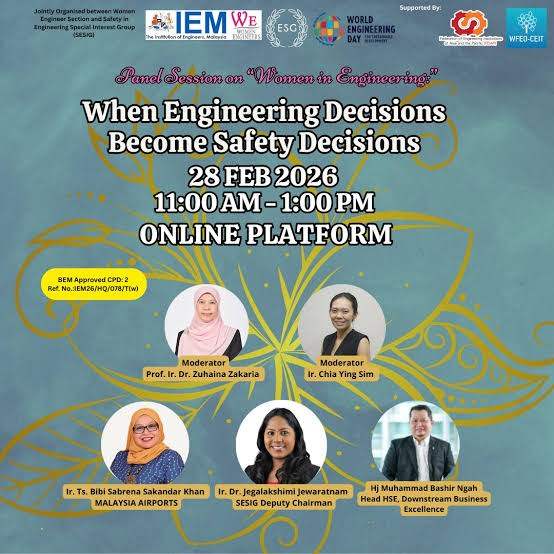

When engineering decisions become safety decisions
4 November 2026 · Ir. Ts. Dr. Bibi Sabrena Sakandar Khan
On 28 February 2026 I sat on an online World Engineering Day panel organised by the IEM Women Engineers Section and the Safety in Engineering Special Interest Group (SESIG). The session was called "Women in Engineering: When Engineering Decisions Become Safety Decisions", and it was approved by BEM for 2 CPD.
Our moderators were Prof. Ir. Dr. Zuhaina Zakaria and Ir. Chia Ying Sim. I shared the panel with Ir. Dr. Jegalakshimi Jewaratnam, SESIG Deputy Chairman, and Hj Muhammad Bashir Ngah, Head HSE, Downstream Business Excellence.
I prepared my notes the way I prepare for a site walk. What could go wrong, and why nobody would see it coming. Here is what I shared, tidied up a little.
Safety is designed upfront, not repaired later
Every engineering choice sets the baseline for risk. Material selection, redundancy, inspection access, maintenance philosophy, software logic. Together they decide whether the people who operate the system later inherit a stable one or a fragile one.
A component chosen for speed today becomes a failure point tomorrow. Limited access for maintenance today becomes deferred inspection later. Weak integration testing today becomes operational disruption years later.
So when someone asks me about safety performance ten years after handover, my honest answer is that most of it was decided at project stage. It shows how much design discipline and engineering integrity we held on to while the schedule was shouting at us.
Passengers judge us on reliability
Passengers never read our specifications. They only see whether the system works. Consistent uptime builds confidence quietly. Repeated disruptions wipe out trust far faster than we can rebuild it. I have lived this one on the Aerotrain.
That is why I keep pushing for robustness over minimum compliance, lifecycle reliability over the cheapest first cost, and proper system assurance even under schedule pressure. When we get those right, the public gets a transport system that just works, and nobody has to think about it.
Governance decisions become culture
Engineering is technical, yes. It is also ethical stewardship.
When a project team rejects incomplete testing, holds contractors to the specification and escalates risks openly, that habit carries straight into operations. When corners are cut at project stage, that culture moves quietly into maintenance too. Years later the incidents show up. They are not surprises. They are delayed consequences.
The decisions that are hardest to reverse
In large infrastructure, some decisions lock in safety risk early and are very hard to undo once built.
System architecture and redundancy. Single or redundant power supply. Segregation between critical functions. This is the skeleton of the system and it rarely changes. Reduce redundancy to save cost or time and the system may run fine at first, then become vulnerable to cascading failures later. Retrofitting redundancy after commissioning usually means shutdowns, redesign and a lot of money.
Interfaces between systems. Power supply and control systems. SCADA and field equipment. Civil works, drainage and electrical rooms. Most failures in complex assets happen at these interfaces. If responsibilities and technical boundaries are unclear, you get unclear fault ownership, slow response during incidents and incompatible upgrades. Once several contractors have built to the same interface assumptions, correcting them later is extremely difficult.
Documentation and technical governance. This one is often overlooked. If design intent is not written down, the asset owner inherits guesswork, operators work on assumptions, troubleshooting becomes trial and error, and accountability blurs.
Every interface is a potential fault line
If I could put one engineering decision on every safety agenda, it would be system integration and interface design.
When many systems, contractors and technologies come together, safety rarely fails inside a single component. It fails between them. Power to control systems. Software to hardware. Operator to automation. Get the integration assumptions wrong and faults escalate across systems instead of being contained, minor defects combine into major failures, and recovery becomes slower and less predictable.
A common mistake is to treat integration as a coordination item or a line on the schedule. It decides how safely the whole system behaves under stress.
So this is how I put it to the room: every interface is a potential fault line. How we design, test and govern those interfaces should be treated first as a safety decision.
That thinking sits at the heart of my programme Stop Firefighting, Start Foresight. Most of the fires we fight in operations were lit, quietly, at project stage.
From my notes for the World Engineering Day panel, 28 February 2026.